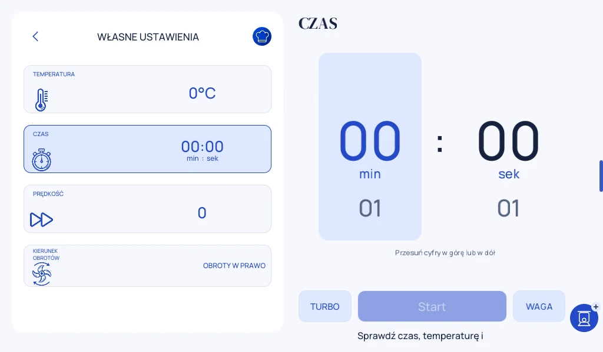
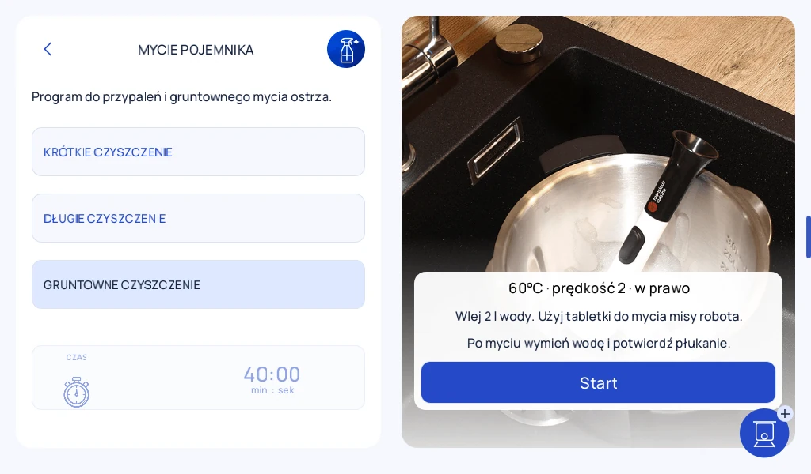
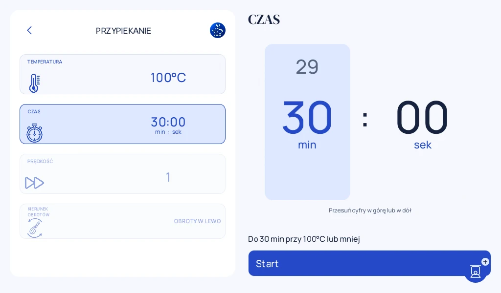
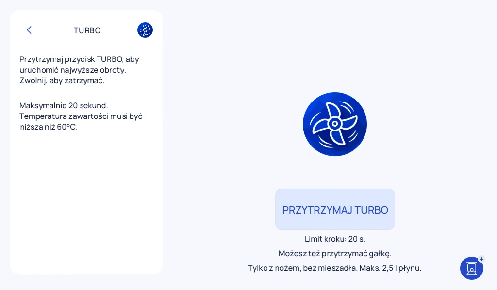
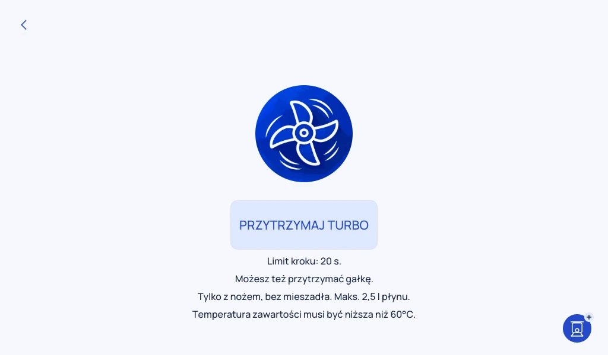
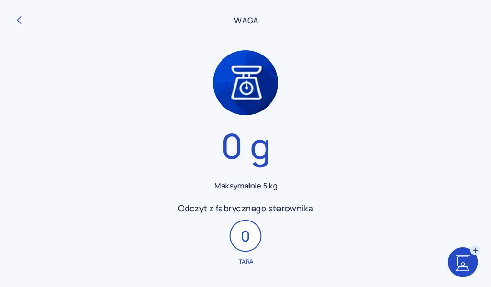

Monsieur Cuisine Connect ·
Programmes, écran et son dans la version 0.17.8
Après la sortie de 0.16.4, j'ai amélioré le support des programmes sur l'écran Connect. Vous pouvez voir le début lors du réglage de l'heure, pendant que vous travaillez, vous pouvez faire une pause, et le volume de clics et le signal final peuvent être écoutés directement dans les paramètres. Ci-dessous, je montre comment les écrans ont changé pour un robot.
Démarrer visible lors du réglage de l'heure
En 0.16.4, le message de paramètres pourrait passer sous les boutons. J'ai déplacé les indices plus haut, et avec les colonnes de minutes et de secondes j'ai ajouté des flèches verticales. Dans les éditeurs de température et de vitesse, la flèche horizontale indique la direction de déplacement. L'heure actuelle reste dans le champ gauche du programme.



Dans les programmes qui supportent la pause après avoir appuyé sur Start apparaît Pause, et sous elle Stop. Après pause, vous pouvez reprendre le cycle à partir de l'arrêt. La barre d'action est alignée sur le dernier champ à gauche. À une hauteur limitée, la priorité est donnée aux boutons. Dans Steam Cooking, l'interrupteur de chauffage avant le comptage est situé directement au-dessus de Start.

Presse, cuisson, lavage et chauffage de l'eau
- Le kneading commence par un ensemble de 2:00 au lieu de 0:45.
- Cuisson par défaut sélectionne 130°C. Au-dessus de 100°C, vous pouvez régler jusqu'à 14 minutes et à 100°C ou moins à 30 minutes. Le changement de température conserve l'intervalle de ce programme, soit 5 secondes de fonctionnement de la lame et 30 secondes de rupture sur le Connect testé.
- Le lavage du récipient a un troisième mode, nettoyage complet. La première étape dure 40 minutes à 60°C et 2 à droite. L'écran vous demande ensuite de remplacer l'eau et de confirmer un court cycle de rinçage.
- Le chauffage de l'eau montre à nouveau l'icône de bouilloire et la lecture de la température actuelle. Lorsque vous lisez sous la plage de mesure, l'écran affiche l'eau froide.







Turbo, Poids et icônes plus claires
Turbo a une icône plus grande, un bouton du milieu et un indice en dessous. Maintenance du bouton physique n'exécute le Turbo que sur l'écran Turbo actif. Larguer le bouton arrête le moteur. À partir du raccourci, vous pouvez quand même revenir au programme ou à la recette en cours.




La température, le temps, la vitesse et la direction de rotation ont un axe commun de valeur. À gauche, les signatures et les icônes sont alignées les unes sur les autres. Les textes d'interface utilisent Manrope coupé avec des caractères polonais. Les icônes avec les noms de programme sont passées de 32 à 48 pixels, et le bouton d'outil flottant de 30%. Une grande icône et un message de lecture plus clair sont restés sur l'écran Poids.



Clics et fin du signal
Dans Paramètres → Le son peut être activé individuellement sur les touches et les alarmes, ainsi que le réglage de leur volume de 0 à 100%. Une fois le curseur libéré, un échantillon avec le volume sélectionné peut être entendu. Une autre alarme d'écoute remplace la précédente. Les valeurs par défaut en 00.17.8 sont de 10% pour les robinets et de 80% pour les alarmes. L'alarme est jouée une fois après la fin naturelle du programme.


Retour à la sélection de l'application après le démarrage du robot
Connect 0.9 module restaure un service de navigation de démarrage rapide après l'activation du robot et après la mise à niveau du module. Après le redémarrage, Android a mis hors de la navigation de début tandis que Firefox attendait toujours en ligne. J'ai vérifié les deux chemins sur l'appareil après le redémarrage. Faites glisser la poignée du bord droit vers la gauche revient à l'écran de sélection à la fois avec Lidlomix Pro et avec l'application d'usine Monsieur Cuisine.

Liste des changements par rapport à 0.16.4
- 0.16.4 — Plein écran d'échelles, Turbo et Shortcut Wash, et revenir à l'étape actuelle du programme ou de la recette. Entrée précédente de la décharge.
- 0.16.5 — Ajouter un nettoyage au sol avec rinçage après confirmation et restaurer l'écran de chauffage à l'eau.
- 0.16.6 — Ajustements des modes de lavage et de cuisson du riz et du message «eau froide».
- 0.16.7 — Début, pause, reprise et arrêt des programmes de soutien en pause, 2 minutes de pétrissage et plus de temps de cuisson après abaissement de la température.
- 0.16.8 — visible Démarrer pendant l'édition, la superposition, le chauffage à côté de Démarrer et la manipulation du bouton sur l'écran Turbo.
- 0.16.9 — plus large Démarrer dans les barres de programme, plus grande icône de rotation, et déplacement Turbo support plus bas.
- 0.16.10 — Turbo écran centré avec une icône plus grande et un groupe de conseils.
- 0.16.11 — bord inférieur de la barre d'action alignée sur le dernier champ de paramètre.
- 0.16.12 — Inscriptions directionnelles de temps et de vitesse.
- 0.16.13 — axes communs d'icônes et de signatures, coupe Manrope et affichage plus clair des balances.
- 0.16.14 — touches fléchées et conseils de gestes plus grands dans les sélecteurs de temps, de température et de vitesse.
- 0.16.15 / 00.17.5 — icônes d'en-tête plus grandes de 50%, outils flottants plus grandes de 30% et une icône sur le Poids. La mainlevée a reçu le numéro 00.17.5 après que la numérotation ait été organisée.
- Connecter le module 0.9 — le support du geste au démarrage du robot et le démarrage automatique après la mise à niveau du module.
- 00.17.6 — clics, alarme de fin de programme unique et commutateurs et curseurs séparés.
- 00.17.7 — plus grandes sélections et boîtes d'écoute après la sortie de la diapositive, avec un volume d'alarme par défaut de 80%.
- 00.17.8 — Volume par défaut du robinet réduit à 10%.
Testé sur Connect
Au travail, j'ai vérifié la visibilité de Start dans les éditeurs, j'ai lancé et arrêté le bouton Turbo, je reviens avec un geste des deux applications après le redémarrage, et je joue un clic et une alarme après un court cycle. J'ai également vérifié que la libération des deux curseurs produit un échantillon avec le volume sélectionné.